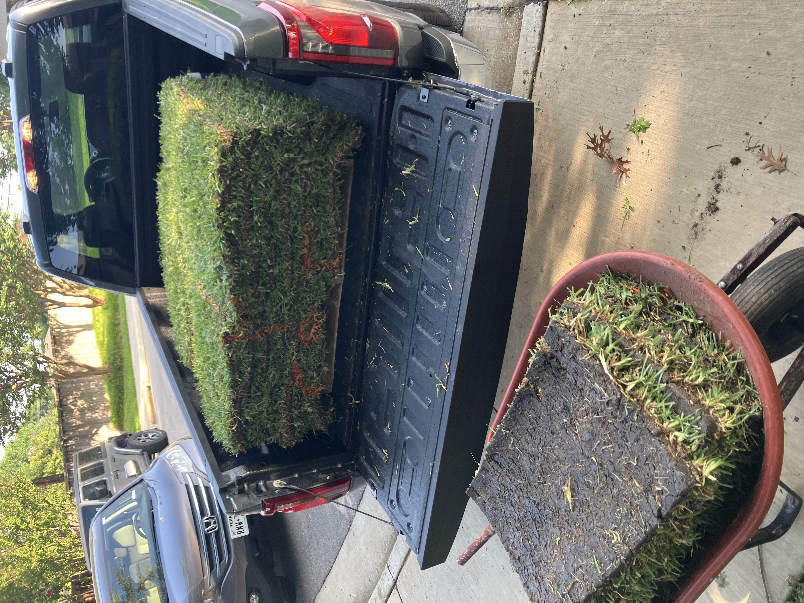
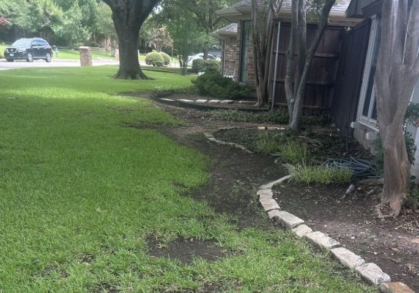
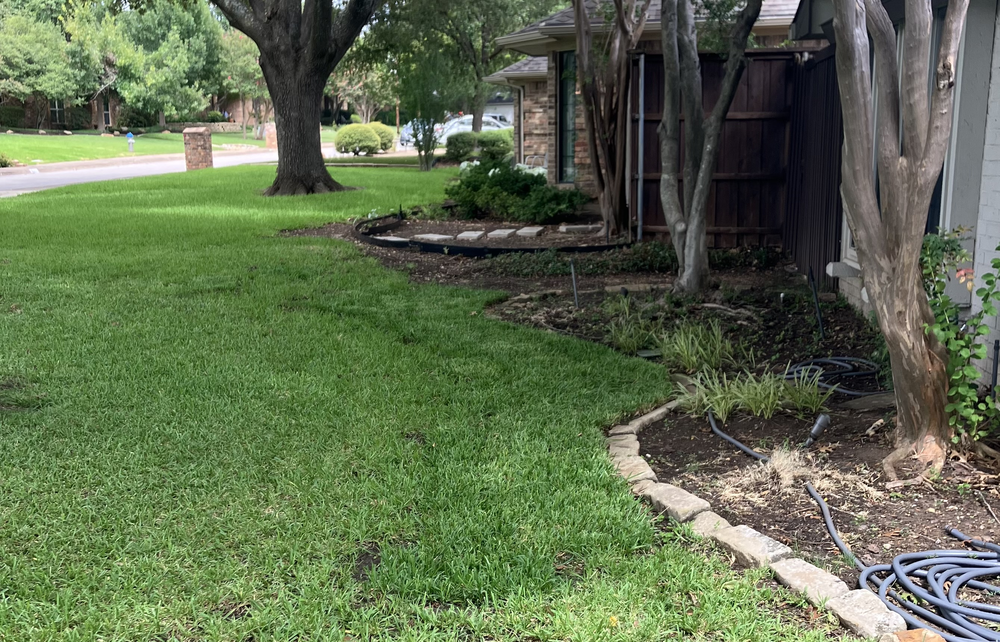

SOD & GRASS
Professional sod installation to give your yard a clean, healthy, and established lawn without waiting months for grass to grow.
Get a Free EstimateFrom preparing the existing lawn to laying the final piece of sod, we handle the installation process to create an even, finished lawn.
We prepare the area by removing existing vegetation and debris and getting the surface ready for new sod.
Proper soil preparation helps create a level surface and gives the new grass a strong foundation for establishment.
We install fresh sod carefully and tightly together to create a clean, consistent lawn with minimal visible seams.
We clean up excess soil, grass, and debris around the work area so your property is left looking finished.
See examples of our sod and lawn installation projects throughout the Dallas area.



We provide landscaping and exterior services throughout Lake Highlands and surrounding areas of the DFW Metroplex.
Contact us for a free estimate on sod installation and lawn preparation.
Get a Free Estimate